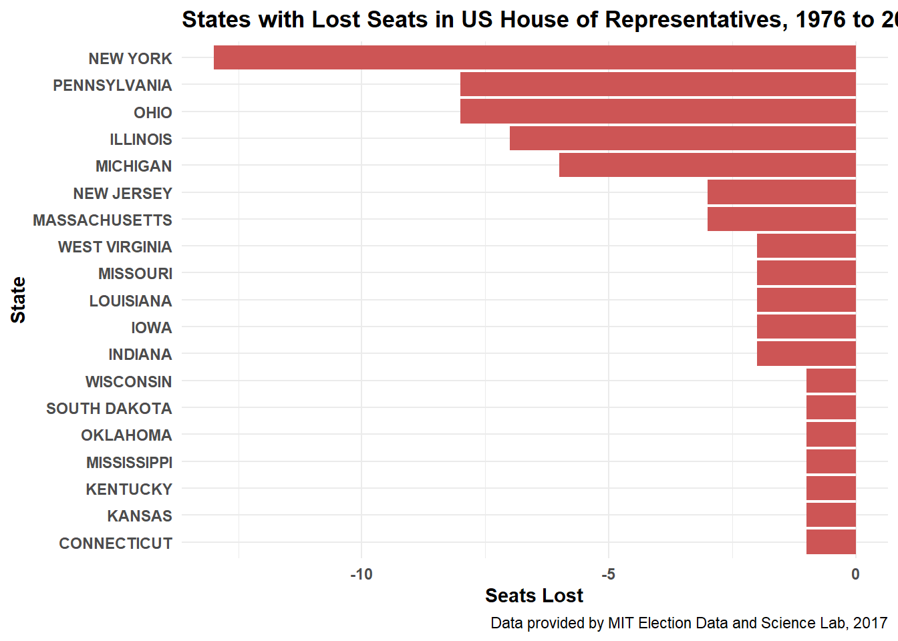
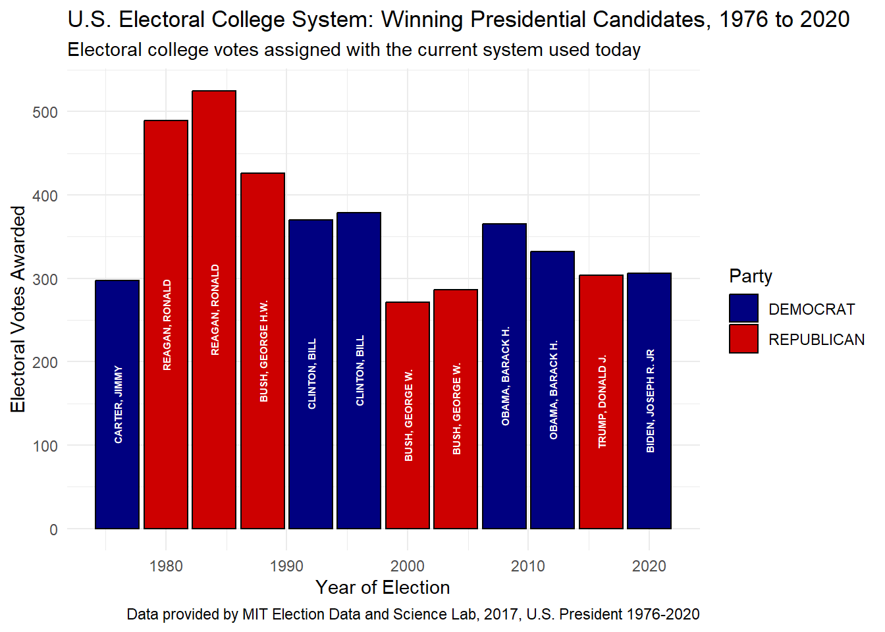

Do Proportional Electoral College Allocations Yield a More Representative Presidency?
Fatima W. | 11/11/2024
Election Day 2020 - Voters in Des Moines precincts 43, 61 and 62 cast their ballots at Roosevelt High School. Taken by Phil Roeder on Flickr Creative Commons usage.
With Election Day having just passed, the U.S. Electoral Voting system is once again up for debate. The US Constitution sets the basic rules of electing the President in Section 1 of Article II since its establishment in 1787. The Electoral College is a voting system that determines the winner of an election through state-assigned electors, rather than the popular vote of the people. Though this system has existed for hundreds of years and the details have changed a bit over time with amendment, statute, and technology improvements, the allocation of electoral votes remains the same. The way it works is each state receives R + 2 electoral college votes, where R is the number of Representatives that state has in the US House of Representatives. Put simply, votes are awarded based on the states’ congressional representation, and the winner is justified by the “winner-takes-all” approach which means a presidential candidate who will win the majority in a state will be awarded all of its electoral votes, regardless of the margin. This brings us to the purpose of this project, which is to analyze historical presidential and congressional voting data and investigate whether it’s true that the US Electoral College systematically biased election results. More specifically, we’ll be taking a look at alternative methods to allocate electoral votes, such as:
We’ll take a look at each of these methods and compare them against actual presidential election results to see how a different voting system would impact election results and overall fair representation.
The Data Explained
In this analysis, we’ll be using a variety of datasets. Our first dataset is US House election votes from 1976 to 2022, which comes from the MIT Election Data Science Lab. They have collected votes from all biennial congressional races in all 50 states here. Additionally, we’ll use statewide presidential vote counts from 1976 to 2022 which can be found here. You’ll have to manually download these datasets after first agreeing to their terms and conditions having to do with proper citations.
For our next datasets, we’ll be using shapefiles of US state districts over the years. Jeffrey B. Lewis, Brandon DeVine, Lincoln Pritcher, and Kenneth C. Martis have created shapefiles for all US congressional districts from 1789 to 2012; they generously make these available here. And because these files only go up to 2012, we’ll obtain shapefiles for the remaining years from the US Census Bureau found here. I’ve provided the code below where you may download all the necessary shapefiles.
Click to view code
if(!require("tidyverse")) install.packages("tidyverse")library(tidyverse)if(!require("dplyr")) install.packages("dplyr")library(dplyr)if(!require("ggplot2")) install.packages("ggplot2")library(ggplot2)if(!require("gganimate")) install.packages("gganimate")library(gganimate)if(!require("sf")) install.packages("sf")library(sf)if(!require("httr")) install.packages("httr")library(httr)if(!require("httr2")) install.packages("httr2")library(httr2)if(!require("gt")) install.packages("gt")library(gt)if(!require("DT")) install.packages("DT")library(DT)if(!require("scales")) install.packages("scales")library(scales)if(!require("patchwork")) install.packages("patchwork")library(patchwork)if(!require("tidyr")) install.packages("tidyr")library(tidyr)if(!require("grid")) install.packages("grid")library(grid)HOUSE_DATA <- readr::read_csv("1976-2022-house.csv")PRESIDENT_DATA <- readr::read_csv("1976-2020-president.csv")######### Task 1: Function to Download Congressional Shapefiles 1976-2012########get_shapefiles <-function(startyear, endyear, BASE_URL) {for (districtfiles in startyear:endyear) { file_name <-paste0("districts", sprintf("%03d", districtfiles), ".zip") url <-paste0(base_url, file_name) destfile <- file_nameif (!file.exists(destfile)) {download.file(url, destfile, mode ="wb") } }}base_url <-"https://cdmaps.polisci.ucla.edu/shp/"get_shapefiles(93, 112, base_url)########## Task 2: Function to Download Congressional Shapefiles 2014-2022########## We'll create a list of the URLs to download our files from the US Census Bureaucensus_urls <-c("https://www2.census.gov/geo/tiger/TIGER2022/CD/tl_2022_us_cd116.zip","https://www2.census.gov/geo/tiger/TIGER2021/CD/tl_2021_us_cd116.zip","https://www2.census.gov/geo/tiger/TIGER2020/CD/tl_2020_us_cd116.zip","https://www2.census.gov/geo/tiger/TIGER2019/CD/tl_2019_us_cd116.zip","https://www2.census.gov/geo/tiger/TIGER2018/CD/tl_2018_us_cd116.zip","https://www2.census.gov/geo/tiger/TIGER2017/CD/tl_2017_us_cd115.zip","https://www2.census.gov/geo/tiger/TIGER2016/CD/tl_2016_us_cd115.zip","https://www2.census.gov/geo/tiger/TIGER2015/CD/tl_2015_us_cd114.zip","https://www2.census.gov/geo/tiger/TIGER2014/CD/tl_2014_us_cd114.zip")get_census_sf <-function(URLs) {for (i in URLs) { file_name <-basename(i)if(!file.exists(file_name)) {download.file(i, file_name, mode ="wb", quiet =TRUE) } }}get_census_sf(census_urls)
Initial Exploration of Vote Count Data
To begin our analysis, we’ll first take a look at the changes in seats of the US House of Representatives from 1976 to 2022. Shown below, we can see there are multiple states that have gained House seats since 1976:
Click to view code
# 3.1 Which states have gained and lost the most seats in the US House of Representatives # between 1976 and 2022?# Let's find the net change between these two years: 1976 and 2022seatchanges <- HOUSE_DATA |>filter(year %in%c(1976, 2022)) |>group_by(state, year) |>summarize(count_seats =n_distinct(district), .groups ="drop") |>pivot_wider(names_from = year, values_from = count_seats) |>mutate(seat_change =`2022`-`1976`)gains <- seatchanges |>filter(seat_change >0) |>arrange(desc(seat_change))losses <- seatchanges |>filter(seat_change <0) |>arrange(seat_change) gt_gains <- gains |>gt() |>tab_header(title ="States with Gains in Seats within US House of Representatives") |>cols_label(state ="State", `1976`="Seats in 1976", `2022`="Seats in 2022",seat_change ="Seats Gained"); gt_gains
States with Gains in Seats within US House of Representatives
State
Seats in 1976
Seats in 2022
Seats Gained
TEXAS
24
38
14
FLORIDA
15
28
13
CALIFORNIA
43
52
9
ARIZONA
4
9
5
GEORGIA
10
14
4
COLORADO
5
8
3
NEVADA
1
4
3
NORTH CAROLINA
11
14
3
WASHINGTON
7
10
3
OREGON
4
6
2
UTAH
2
4
2
NEW MEXICO
2
3
1
SOUTH CAROLINA
6
7
1
TENNESSEE
8
9
1
VIRGINIA
10
11
1
There are also multiple states that have lost House seats since 1976:
Click to view code
gt_losses <- losses |>gt() |>tab_header(title ="States with Losses in Seats within US House of Representatives") |>cols_label(state ="State", `1976`="Seats in 1976", `2022`="Seats in 2022",seat_change ="Seats Lost"); gt_losses
States with Losses in Seats within US House of Representatives
State
Seats in 1976
Seats in 2022
Seats Lost
NEW YORK
39
26
-13
OHIO
23
15
-8
PENNSYLVANIA
25
17
-8
ILLINOIS
24
17
-7
MICHIGAN
19
13
-6
MASSACHUSETTS
12
9
-3
NEW JERSEY
15
12
-3
INDIANA
11
9
-2
IOWA
6
4
-2
LOUISIANA
8
6
-2
MISSOURI
10
8
-2
WEST VIRGINIA
4
2
-2
CONNECTICUT
6
5
-1
KANSAS
5
4
-1
KENTUCKY
7
6
-1
MISSISSIPPI
5
4
-1
OKLAHOMA
6
5
-1
SOUTH DAKOTA
2
1
-1
WISCONSIN
9
8
-1
Let’s take a look at this visually to draw better insights. We can see that Texas gained the most House seats since 1976, followed by Florida and California, which indicates that these states have gained more representation. Due to a states’ increase in population, more seats are granted to a state so each state will be fairly represented. If you have ever heard of the national census, this is how the U.S. Congress adjusts the number of House seats every decade.
Click to view code
plot_gains <-ggplot(gains, aes(x =reorder(state, seat_change), y = seat_change)) +geom_bar(stat ="identity", fill ="darkseagreen4") +coord_flip() +theme_minimal() +labs(title ="States with Gained Seats in US House of Representatives, 1976 to 2022",x ="State",y ="Seats Gained",caption ="Data provided by MIT Election Data and Science Lab, 2017") +theme(axis.text.x =element_text(face ="bold"),axis.text.y =element_text(face ="bold"),axis.title.x =element_text(face ="bold"),axis.title.y =element_text(face ="bold"),plot.title =element_text(face ="bold")); plot_gains
Surprisingly, New York lost the most House seats since 1976. This is followed by Pennsylvania and Ohio.
Click to view code
plot_losses <-ggplot(losses, aes(x =reorder(state, -seat_change), y = seat_change)) +geom_bar(stat ="identity", fill ="indianred3") +coord_flip() +theme_minimal() +labs(title ="States with Lost Seats in US House of Representatives, 1976 to 2022",x ="State",y ="Seats Lost",caption ="Data provided by MIT Election Data and Science Lab, 2017") +theme(axis.text.x =element_text(face ="bold"),axis.text.y =element_text(face ="bold"),axis.title.x =element_text(face ="bold"),axis.title.y =element_text(face ="bold"),plot.title =element_text(face ="bold")); plot_losses

Fusion Voting
New York State has a unique “fusion” voting system where one candidate can appear on multiple “lines” on the ballot and their vote counts are totaled. For instance, in 2022, Jerrold Nadler appeared on both the Democrat and Working Families party lines for NYS’ 12th Congressional District. He received 200,890 votes total (184,872 as a Democrat and 16,018 as WFP), easily defeating Michael Zumbluskas, who received 44,173 votes across three party lines (Republican, Conservative, and Parent). We want to see if there are any elections in our data where House election outcomes would have been different had the “fusion” system not been used and candidates only received their votes from their “major party line,” that is, Democrat or Republican, and not their total number of votes across all lines. Focusing solely on NY House data, we find the following:
Click to view code
NY_HOUSE_DATA <- HOUSE_DATA |>filter(state =="NEW YORK")fusion_wins <- NY_HOUSE_DATA |>group_by(year, district, candidate) |>summarize(total_fused_votes =sum(candidatevotes)) |>ungroup() |>group_by(year, district) |>filter(total_fused_votes ==max(total_fused_votes)) |>select(year, district, winner_fused = candidate, total_fused_votes) |>ungroup()# Winners where there is no fusion system being used (focused on major party votes only)notfusion_wins <- NY_HOUSE_DATA |>filter(party %in%c("DEMOCRAT", "REPUBLICAN")) |>group_by(year, district, candidate) |>summarize(major_party_votes =sum(candidatevotes)) |>ungroup() |>group_by(year, district) |>filter(major_party_votes ==max(major_party_votes)) |>select(year, district, winner_notfused = candidate, major_party_votes) |>ungroup()# Use left join and filter to see how the election results differ by fusion and non-fusionelection_results <- fusion_wins |>left_join(notfusion_wins, join_by(year, district)) |>filter(winner_fused != winner_notfused) |>mutate(difference_of_votes = total_fused_votes - major_party_votes)# See the resultsgt_electionresults <- election_results |>gt() |>tab_header(title =md("**Fusion Elections vs. Non-Fusion Elections (Year-District)**"), subtitle ="Elections where results would've been different if the fusion system wasn't used") |>cols_label(year ="Year", district ="District", winner_fused ="Fusion Winner", total_fused_votes ="Fusion Votes", winner_notfused ="Non-Fusion Winner", major_party_votes ="MP Votes", difference_of_votes ="Difference") |>fmt_number(columns =c("total_fused_votes", "major_party_votes", "difference_of_votes"),decimals =0,use_seps =TRUE) |>tab_footnote(footnote ="Data provided by MIT Election Data and Science Lab, 2017"); gt_electionresults
Fusion Elections vs. Non-Fusion Elections (Year-District)
Elections where results would've been different if the fusion system wasn't used
Year
District
Fusion Winner
Fusion Votes
Non-Fusion Winner
MP Votes
Difference
1976
29
EDWARD W PATTISON
100,663
JOSEPH A MARTINO
96,476
4,187
1980
3
GREGORY W CARMAN
87,952
JEROME A AMBRO JR
75,389
12,563
1980
6
JOHN LEBOUTILLIER
89,762
LESTER L WOLFF
74,319
15,443
1984
20
JOSEPH J DIOGUARDI
106,958
OREN J TEICHER
102,842
4,116
1986
27
GEORGE C WORTLEY
83,430
ROSEMARY S POOLER
81,133
2,297
1992
3
PETER T KING
124,727
STEVE A ORLINS
116,915
7,812
1994
1
MICHAEL P FORBES
90,491
GEORGE J HOCHBRUECKNER
78,692
11,799
1996
1
MICHAEL P FORBES
116,620
NORA L BREDES
93,816
22,804
1996
30
JACK QUINN
121,369
FRANCIS J PORDUM
97,686
23,683
2006
25
JAMES T WALSH
110,525
DAN MAFFEI
100,605
9,920
2006
29
JOHN R "RANDY" KUHL JR
106,077
ERIC J MASSA
94,609
11,468
2010
13
MICHAEL G GRIMM
65,024
MICHAEL E MCMAHON
60,773
4,251
2010
19
NAN HAYMORTH
109,956
JOHN J HALL
98,766
11,190
2010
24
RICHARD L HANNA
101,599
MICHAEL A ARCURI
89,809
11,790
2010
25
ANN MARIE BUERKLE
104,602
DANIEL B MAFFEI
103,954
648
2012
27
CHRIS COLLINS
161,220
KATHLEEN C HOCHUL
140,008
21,212
2018
1
LEE M ZELDIN
139,027
PERRY GERSHON
124,213
14,814
2018
24
JOHN M KATKO
136,920
DANA BALTER
115,902
21,018
2018
27
CHRIS COLLINS
140,146
NATHAN D MCMURRAY
128,167
11,979
2022
4
ANTHONY P D’ESPOSITO
140,622
LAURA A GILLEN
130,871
9,751
2022
17
MICHAEL V LAWLER
143,550
SEAN PATRICK MALONEY
133,457
10,093
2022
22
BRANDON M WILLIAMS
135,544
FRANCIS CONOLE
132,913
2,631
Data provided by MIT Election Data and Science Lab, 2017
There are multiple years where election results would have been different if the “fusion” system was not used; years where there are larger distinct voting differences of higher than 20,000 votes include 1996, 2012, and 2018.
Presidential versus Congressional Trends
We now want to take a look at whether presidential candidates tend to run ahead/behind congressional candidates in the same state. In other words, does a Democratic candidate for president tend to receive more votes in a given state than all of Democratic congressional candidates in the same state? Using the table shown below, we can see that over time in most states, presidential candidates tend to run ahead of congressional candidates.
Click to view code
# First group by year and state and sum the votes for each presidential candidatepresidential_votes <- PRESIDENT_DATA |>group_by(year, state) |>summarize(presidential_votes =sum(candidatevotes, na.rm =TRUE)) congressional_votes <- HOUSE_DATA |>group_by(year, state) |>summarize(congress_votes =sum(candidatevotes, na.rm =TRUE))# It may be easier to see the vote difference as a percentage:pres_congress <- presidential_votes |>left_join(congressional_votes, join_by(year, state)) |>mutate(presidential_ahead = presidential_votes > congress_votes,difference = presidential_votes - congress_votes, percent_difference =round((presidential_votes - congress_votes)/congress_votes *100, 1))pres_congress |> DT::datatable(colnames =c("Year", "State", "Pres. Votes", "Congress Votes", "Presidential Ahead?", "By how much?", "Percent Difference" ))
We may also ask how it might differ across states, which can be shown below. Plots containing negative values (“downward” column bars) indicate congressional candidates are trending ahead of presidential candidates, whereas positive values (“upward” column bars) indicate presidential candidates are trending ahead of congressional candidates. We can see that there are multiple states, such as Idaho, Montana, and Wyoming, where the column bars are barely noticeable, indicating that there isn’t a significant vote difference between presidential and congressional candidates relative to other states.
Click to view code
# First filter and collect votes for presidential and congressional data setspresidential_votes2 <- PRESIDENT_DATA |>filter(party_simplified %in%c("DEMOCRAT", "REPUBLICAN")) |>group_by(year, state, party_simplified) |>summarize(president_votes =sum(candidatevotes)) |>ungroup()congressional_votes2 <- HOUSE_DATA |>filter(party %in%c("DEMOCRAT", "REPUBLICAN")) |>group_by(year, state, party) |>summarize(congress_votes =sum(candidatevotes)) |>ungroup()compare_votes <- presidential_votes2 |>left_join(congressional_votes2, join_by(year, state, party_simplified == party)) |>mutate(difference = president_votes - congress_votes)# View this visually across states plot_states_compare_votes <-ggplot(compare_votes, aes(x = year, y = difference, fill = state)) +geom_bar(stat ="identity", position ="dodge") +labs(title ="Presidential vs. Congressional Voting Trends Across States",x ="Year", y ="Vote Difference",caption ="Data provided by MIT Election Data and Science Lab, 2017") +theme_minimal() +theme(legend.position ="none") +facet_wrap(~ state) +scale_x_continuous(breaks =seq(min(compare_votes$year), max(compare_votes$year), by =8), labels =function(x) paste0("'", substr(x, 3, 4))) +scale_y_continuous(labels =function(x) paste0(x /1000, "K")) +theme(axis.text.x =element_text(face ="bold"),axis.text.y =element_text(face ="bold"),axis.title.x =element_text(face ="bold"),axis.title.y =element_text(face ="bold"),plot.title =element_text(face ="bold")); plot_states_compare_votes
We can also visualize how these results may differ across parties. Plots where the line is trending upwards indicate that, in its respective political party, the presidential candidate is increasingly receiving more votes compared to congressional candidates of that same party (in the same state). Contrastingly, lines trending downwards indicate that the congressional candidate is increasingly receiving more votes compared to presidential candidates of that same party. Most states don’t seem to differ much across parties, such as Nebraska, Nevada, Rhode Island, and Wyoming, however there are many fluctuations across states like California, Florida, Texas, Georgia, and Pennsylvania. It’s also important to think of reasons why this might have happened, especially in swing states Florida, Georgia, and Pennsylvania. One possible explanation may be the potential disconnect between presidential and congressional elections. For example, it’s possible some people may have voted for the presidential Democratic party, but also voted for the congressional Republican party. Though we don’t have the support to know the exact reason(s), it’s interesting to see how this trend differs across political parties.
Click to view code
# View this visually across major political parties Democrat and Republican plot_mp_compare_votes <-ggplot(compare_votes, aes(x = year, y = difference, color = party_simplified, group = party_simplified)) +geom_line(linewidth =1) +labs(title ="Presidential vs. Congressional Voting Trends by Party", x ="Year",y ="Vote Difference", subtitle ="Vote difference for each state and major political parties across the years",caption ="Data provided by MIT Election Data and Science Lab, 2017",color ="Political Party") +theme_minimal() +theme(legend.position ="bottom") +facet_wrap(~ state) +scale_x_continuous(breaks =seq(min(compare_votes$year), max(compare_votes$year), by =8),labels =function(x) paste0("'", substr(x, 3, 4))) +scale_y_continuous(labels =function(x) paste0(x /1000, "K")) +scale_color_manual(values =c("DEMOCRAT"="#377eb8", "REPUBLICAN"="#E41A1C")); plot_mp_compare_votes
Lastly, we want to know if there are any presidents who are particularly more or less popular than their co-partisans. Shown below, are the average voting differences among the two major political parties over the years. Lines trending upward indicate that the president increasingly received more votes than their co-partisans, making them more popular, whereas lines trending downward indicate they received less, making them less popular. Around 1984, we see that for Republican parties, the line trends downwards which suggests that the votes for the president at that time was significantly lower than that of other Republican congressional candidates.
Click to view code
# Let's find the average of votes across all states to see how they compare with their co-partisanspopularity <- compare_votes |>group_by(year, party_simplified) |>summarize(avgdiff =mean(difference, na.rm =TRUE)) |>arrange(year)popularity_plot <-ggplot(popularity, aes(x = year, y = avgdiff, color = party_simplified)) +geom_line(linewidth =1) +geom_point(size =2) +labs(title ="Average Vote Difference Among Presidential and Congressional Candidates",subtitle ="Shown by major policatal parties",caption ="Data provided by MIT Election Data and Science Lab, 2017",x ="Year",y ="Average Vote Difference",color ="Political Party") +theme_minimal() +theme(legend.position ="bottom") +theme(axis.text.x =element_text(face ="bold"),axis.text.y =element_text(face ="bold"),axis.title.x =element_text(face ="bold"),axis.title.y =element_text(face ="bold"),plot.title =element_text(face ="bold")) +scale_color_manual(values =c("DEMOCRAT"="#377eb8", "REPUBLICAN"="#E41A1C")) +scale_y_continuous(labels = scales::comma); popularity_plot
Visualizing Election Results
We’ll now move on to creating a visualization of electoral college results across the US since it is usually easier to see election results geographically. Using the data we’ve downloaded earlier, we’ve created a chloropleth visualization of the electoral college results for the 2000 presidential election (Bush vs. Gore). Each state represents either red or blue, indicating the political party that won the most electoral votes in that state.
Click to view code
########################################## Task 4: Automate Zip File Extraction########################################## We'll create a function that'll load in our shapefilesload_all_shapefiles <-function() { zip_files <-list.files(pattern ="\\.zip$")for (zip_file in zip_files) { unzip_dir <-tempdir() zip_contents <-unzip(zip_file, exdir = unzip_dir) shp_file <- zip_contents[grepl("\\.shp$", zip_contents)]if (length(shp_file) >0) { df_name <- tools::file_path_sans_ext(basename(zip_file)) sf_object <-read_sf(shp_file)assign(df_name, sf_object, envir = .GlobalEnv) } }}load_all_shapefiles()
Click to view code
######################################################## Task 5: Chloropleth Visualization of the # 2000 Presidential Election Electoral College Results######################################################## We'll use zipfile districts106 since that corresponds to the 2000 presidential election# Let's first get the electoral college votes results across states in the 2000 electionstate_ecv_breakdown <- PRESIDENT_DATA |>filter(year ==2000) |>group_by(state, party_simplified) |>summarize(votes =sum(candidatevotes)) |>ungroup() |>group_by(state) |>slice_max(votes, n =1) |>ungroup() |>select(state, party_simplified)# To combine the above results with the shape file, we'll use state however the format of the # string is different (entirely uppercase states vs. lowercase states). Let's fix the formatting before combining.shpfile_2000 <- districts106 |>mutate(STATENAME =toupper(STATENAME))# Now let's join this shapefile with the electoral votes results we just madecombined_ecv_shp <- state_ecv_breakdown |>left_join(shpfile_2000, join_by(state == STATENAME))# We're now able to create a chloropleth plot:chloropleth_2000 <-ggplot(combined_ecv_shp, aes(geometry = geometry, fill = party_simplified)) +geom_sf() +labs(title ="2000 Presidential Election Results",subtitle ="Electoral College Votes Across States",fill ="Winning Presidential Candidate") +theme_minimal() +scale_fill_brewer(palette ="Set1", direction =-1, labels =c("Bush", "Gore")) +coord_sf(xlim =c(-130, -60), ylim =c(20, 50), expand =FALSE) +theme(axis.text =element_blank(),axis.ticks =element_blank(),axis.title =element_blank(),panel.grid.major =element_blank(),panel.grid.minor =element_blank(),panel.background =element_blank(),plot.background =element_blank() )# We see that Hawaii and Alaska are missing from this plot, so let's inset them by # separating the data for Alaska and Hawaii from the 2000 shape file data set.hawaii <- combined_ecv_shp[combined_ecv_shp$state =="HAWAII",]hawaii_inset <-ggplot(hawaii, aes(geometry = geometry, fill = party_simplified)) +geom_sf(fill ="#377eb8") +theme_minimal() +coord_sf(xlim =c(-162,-154), ylim =c(18, 23)) +theme_void() +theme(legend.position ="none")alaska <- combined_ecv_shp[combined_ecv_shp$state =="ALASKA",]alaska_inset <-ggplot(alaska, aes(geometry = geometry, fill = party_simplified)) +geom_sf() +theme_minimal() +scale_fill_brewer(palette ="Set1", direction =-1) +coord_sf(xlim =c(-183, -125), ylim =c(50, 73)) +theme_void() +theme(legend.position ="none")main_plot <- chloropleth_2000grid.newpage() print(main_plot, vp =viewport(x =0.5, y =0.5, width =1, height =1))print(hawaii_inset, vp =viewport(x =0.30, y =0.15, width =0.2, height =0.2))print(alaska_inset, vp =viewport(x =0.17, y =0.15, width =0.25, height =0.25))
Comparing the Effects of ECV Allocation Rules
As we’ve mentioned earlier, one of the goals of this analysis is to test how different voting strategies would impact presidential election results over the years from 1976 onwards. For reference, the visual below displays the actual presidential results which we’ll use to compare against the four voting strategies.
Click to view code
actual_election_results <-data.frame(year =c(1976, 1980, 1984, 1988, 1992, 1996, 2000, 2004, 2008, 2012, 2016, 2020),president =c("CARTER, JIMMY", "REAGAN, RONALD", "REAGAN, RONALD", "BUSH, GEORGE H.W.","CLINTON, BILL", "CLINTON, BILL", "BUSH, GEORGE W.", "BUSH, GEORGE W.","OBAMA, BARACK H.", "OBAMA, BARACK H.", "TRUMP, DONALD J.", "BIDEN, JOSEPH R. JR"),party =c("DEMOCRAT", "REPUBLICAN", "REPUBLICAN", "REPUBLICAN", "DEMOCRAT", "DEMOCRAT","REPUBLICAN", "REPUBLICAN", "DEMOCRAT", "DEMOCRAT", "REPUBLICAN", "DEMOCRAT"),actual_ecv =c(297, 489, 525, 426, 370, 379, 271, 286, 365, 332, 304, 306))plot_actual_election_results <-ggplot(actual_election_results, aes(x = year, y = actual_ecv, fill = party)) +geom_col(color ="black") +scale_fill_manual(values =c("DEMOCRAT"="navyblue", "REPUBLICAN"="red3")) +labs(title ="U.S. Electoral College System: Winning Presidential Candidates, 1976 to 2020",subtitle ="Electoral college votes assigned with the current system used today",x ="Year of Election",y ="Electoral Votes Awarded", fill ="Party",caption ="Data provided by MIT Election Data and Science Lab, 2017, U.S. President 1976-2020") +theme_minimal() +geom_text(aes(label = president),color ="white", size =2, position =position_stack(vjust =0.5),angle =90, fontface ="bold"); plot_actual_election_results

The State-Wide Winner-Take-All Approach
The state-wide winner-takes-all voting system is the common method used by most states, which is what the US has been doing since the Constitution was ratified. To reiterate, the presidential candidate who receives the majority of the popular vote will receive all of the electoral college votes of that state.
Click to view code
# Let's first clarify the number of electoral votes each state has over the years since 1976# Remember that District of Columbia will have 3 fixed ECVsstate_ecv <- HOUSE_DATA |>group_by(year, state) |>summarize(housereps =n_distinct(district)) |>mutate(ecv =ifelse(state =="DISTRICT OF COLUMBIA", 3, housereps +2)) |>select(year, state, ecv)# State-Wide Winner-Take-Allstate_winner_takeall <- PRESIDENT_DATA |>group_by(year, state, candidate) |>summarize(votes_total =sum(candidatevotes)) |>ungroup() |>group_by(year, state) |>slice_max(order_by = votes_total, n =1, with_ties =FALSE) # We'll join the candidates that won with the ECVs of each state over the yearsstate_winner_takeall_ecv <- state_winner_takeall |>left_join(state_ecv, join_by(year, state))# We want the total number of ECVs won across the country by the candidate who woncountry_winner <- state_winner_takeall_ecv |>group_by(year, candidate) |>summarize(ecv_total =sum(ecv)) |>slice_max(order_by = ecv_total, n =1, with_ties =FALSE) |>ungroup()gt_country_winner <- country_winner |>gt() |>tab_header(title ="State-Wide Winner Takes All Approach",subtitle ="Winning presidential candidates according to state-wide winner takes all approach") |>cols_label(year ="Year", candidate ="Winning Candidate", ecv_total ="Total Electoral Votes") |>tab_footnote(footnote ="Source: MIT Election Data and Science Lab, 2017"); gt_country_winner
State-Wide Winner Takes All Approach
Winning presidential candidates according to state-wide winner takes all approach
This voting method takes the popular vote of each district in a state and awards one electoral vote to the presidential candidate that wins in that district. After this process, the remaining two “at large” votes will go towards the candidate who receives the majority of the popular vote in that state. We’re assuming that the presidential candidate of the same party as the congressional representative wins that election. Comparing these outcomes to the actual presidential results, there is a major difference in candidates that would’ve won had the US used this approach. Not only are some of the candidates different, but the electoral vote count awarded to actual presidents are in fact higher than real life results.
Click to view code
# District-Wide Winner-Take-All + State-Wide “At Large” Votes# First we'll do the district-wide winner takes all, then we'll add the remaining 2 votesdistrict_wide_winners <- HOUSE_DATA |>group_by(year, state, district) |>slice_max(order_by = candidatevotes, n =1, with_ties =FALSE) |>ungroup() |>group_by(year, state, candidate, party) |>summarize(ecv_district =n(), .groups ="drop")# Based on those who received the most votes at the state level, we'll assign the 2 # remaining "at large" votes:state_wide_winners <- HOUSE_DATA |>group_by(year, state, candidate, party) |>summarize(total_state_votes =sum(candidatevotes), .groups ="drop") |>group_by(year, state) |>slice_max(order_by = total_state_votes, n =1, with_ties =FALSE) |>mutate(at_large =2)# Now we'll combine the above data frames to find the total ECV. Also beware of NA values# which will cause issues later when we sum up the totalsecv_combined <- district_wide_winners |>left_join(state_wide_winners, by =c("year", "state", "candidate", "party")) |>mutate(at_large =replace_na(at_large, 0)) |>mutate(total_ecv = ecv_district + at_large) |>select(-total_state_votes, -candidate)# Finally we join this with presidential data so get the winning president names with ECVfinal_districtwide_ecv_winners <- ecv_combined |>left_join(PRESIDENT_DATA, by =c("year", "state", "party"="party_simplified")) |>select(year, state, candidate, total_ecv) |>group_by(year, candidate) |>summarize(total_ecv =sum(total_ecv)) |>slice_max(order_by = total_ecv, n =1, with_ties =FALSE) |>filter(!is.na(candidate)) |>ungroup()gt_final_districtwide_winners <- final_districtwide_ecv_winners |>gt() |>tab_header(title ="District-Wide Winner-Take-All & State-Wide “At Large” Votes",subtitle ="Winning candidates according to district-wide winner-take-all & state-wide “at large” votes approach") |>cols_label(year ="Year", candidate ="Winning Candidate", total_ecv ="Total Electoral Votes") |>tab_footnote(footnote ="Source: MIT Election Data and Science Lab, 2017"); gt_final_districtwide_winners
Winning candidates according to district-wide winner-take-all & state-wide “at large” votes approach
Year
Winning Candidate
Total Electoral Votes
1976
CARTER, JIMMY
353
1980
CARTER, JIMMY
280
1984
MONDALE, WALTER
302
1988
DUKAKIS, MICHAEL
299
1992
CLINTON, BILL
296
1996
DOLE, ROBERT
287
2000
BUSH, GEORGE W.
294
2004
BUSH, GEORGE W.
296
2008
OBAMA, BARACK H.
308
2012
ROMNEY, MITT
275
2016
TRUMP, DONALD J.
300
2020
TRUMP, DONALD J.
269
Source: MIT Election Data and Science Lab, 2017
Click to view code
get_diswide_party <- final_districtwide_ecv_winners |>left_join(PRESIDENT_DATA, join_by(year, candidate)) |>group_by(year, candidate) |>slice_max(order_by = total_ecv, n =1, with_ties =FALSE) |>select(year, candidate, total_ecv, party_simplified)plot_diswide <-ggplot(get_diswide_party, aes(x = year, y = total_ecv, fill = party_simplified)) +geom_col(color ="black") +scale_fill_manual(values =c("DEMOCRAT"="royalblue", "REPUBLICAN"="orangered3")) +labs(title ="District-Wide Take All: Winning Presidential Candidates, 1976 to 2020",subtitle ="Electoral college votes are assigned using the district-wide winner-take-all and state-wide “at large” votes approach",x ="Year of Election",y ="Electoral Votes Awarded", fill ="Party",caption ="Data provided by MIT Election Data and Science Lab, 2017, U.S. President 1976-2020") +theme_minimal() +geom_text(aes(label = candidate),color ="white", size =3, position =position_stack(vjust =0.5),angle =90, fontface ="bold"); plot_diswide
State-Wide Proportional Approach
The state-wide proportional voting system takes the popular vote of each state and proportionally awards electoral college votes to each presidential candidate. Similar to the district-wide approach, the state-wide approach provides slightly different results for certain presidential elections.
Click to view code
# State-Wide Proportional# We'll find the proportion of votes that each candidate receives based on the overall # total popular vote across each state and then join it with the state ECV data frame to# calculate the awarded ECVs. state_proportional <- PRESIDENT_DATA |>mutate(vote_proportion = candidatevotes/totalvotes) |>select(year, state, candidate, vote_proportion, party_simplified) |>left_join(state_ecv, by =c("year", "state")) |>mutate(ecv_awarded =round(vote_proportion * ecv))# Now we'll calculate the total awarded ECVs for each candidate across the country by yearstate_prop <- state_proportional |>group_by(year, candidate) |>summarize(total_ecv_awarded =sum(ecv_awarded, na.rm =TRUE), .groups ="drop") # Lastly we'll select the winning candidates with the most ECVs by each election yearstatewide_president_winners <- state_prop |>group_by(year) |>slice_max(order_by = total_ecv_awarded, n =1, with_ties =FALSE) |>select(year, candidate, total_ecv_awarded) |>ungroup()gt_stw_president_winners <- statewide_president_winners |>gt() |>tab_header(title ="State-Wide Proportional Approach",subtitle ="Winning presidential candidates using the state-wide proportional approach") |>cols_label(year ="Year", candidate ="Winning Candidate", total_ecv_awarded ="Total Electoral Votes") |>tab_footnote(footnote ="Source: MIT Election Data and Science Lab, 2017"); gt_stw_president_winners
State-Wide Proportional Approach
Winning presidential candidates using the state-wide proportional approach
Year
Winning Candidate
Total Electoral Votes
1976
CARTER, JIMMY
265
1980
REAGAN, RONALD
268
1984
REAGAN, RONALD
317
1988
BUSH, GEORGE H.W.
288
1992
CLINTON, BILL
226
1996
CLINTON, BILL
260
2000
BUSH, GEORGE W.
259
2004
BUSH, GEORGE W.
276
2008
OBAMA, BARACK H.
279
2012
OBAMA, BARACK H.
269
2016
CLINTON, HILLARY
255
2020
BIDEN, JOSEPH R. JR
272
Source: MIT Election Data and Science Lab, 2017
Click to view code
state_wide_getparty <- statewide_president_winners |>left_join(PRESIDENT_DATA, join_by(year, candidate)) |>group_by(year, candidate) |>slice_max(order_by = total_ecv_awarded, n =1, with_ties =FALSE) |>select(year, candidate, total_ecv_awarded, party_simplified)plot_statewide_getparty <-ggplot(state_wide_getparty, aes(x = year, y = total_ecv_awarded, fill = party_simplified)) +geom_col(color ="black") +scale_fill_manual(values =c("DEMOCRAT"="royalblue", "REPUBLICAN"="orangered3")) +labs(title ="State-Wide Proportional: Winning Presidential Candidates, 1976 to 2020",subtitle ="Electoral college votes are assigned using the state-wide proportional approach",x ="Year of Election",y ="Electoral Votes Awarded", fill ="Party",caption ="Data provided by MIT Election Data and Science Lab, 2017, U.S. President 1976-2020") +theme_minimal() +geom_text(aes(label = candidate),color ="white", size =3, position =position_stack(vjust =0.5),angle =90, fontface ="bold"); plot_statewide_getparty
National Proportional Approach
Lastly we have the national proportional approach, which is where we take the national popular vote and assign electoral college votes proportionally to presidential candidates. Since there are 538 electoral college votes, candidates would be awarded electoral votes based on their winning percentage of national votes. This approach doesn’t differ significantly from the actual presidential election results (in terms of who won the presidency), but there are changes in the amount of electoral votes awarded to each of these winning candidates.
Click to view code
# National Proportional# We understand that there are 538 electoral votes total since 1964# First we'll find each candidate's total popular votes nationwide, and the total national# votes for each yearnational_prop <- PRESIDENT_DATA |>group_by(year, candidate) |>summarize(total_candidatevotes =sum(candidatevotes),total_nationalvotes =sum(totalvotes)) |>ungroup() |>mutate(vote_prop = total_candidatevotes/total_nationalvotes) |>mutate(ecv_awarded =round(vote_prop*538)) |>group_by(year) |>slice_max(order_by = ecv_awarded, n =1, with_ties =FALSE) |>select(year, candidate, ecv_awarded) |>ungroup()gt_national_prop <- national_prop |>gt() |>tab_header(title ="National Proportional Approach",subtitle ="Winning presidential candidates using the national proportional approach") |>cols_label(year ="Year", candidate ="Winning Candidate", ecv_awarded ="Total Electoral Votes") |>tab_footnote(footnote ="Source: MIT Election Data and Science Lab, 2017"); gt_national_prop
National Proportional Approach
Winning presidential candidates using the national proportional approach
Year
Winning Candidate
Total Electoral Votes
1976
CARTER, JIMMY
249
1980
REAGAN, RONALD
255
1984
REAGAN, RONALD
295
1988
BUSH, GEORGE H.W.
268
1992
CLINTON, BILL
217
1996
CLINTON, BILL
248
2000
BUSH, GEORGE W.
241
2004
BUSH, GEORGE W.
257
2008
OBAMA, BARACK H.
269
2012
OBAMA, BARACK H.
260
2016
TRUMP, DONALD J.
230
2020
BIDEN, JOSEPH R. JR
276
Source: MIT Election Data and Science Lab, 2017
Click to view code
# Let's get their parties to visualize this and compare it against actual real life election resultsget_party <- national_prop |>left_join(PRESIDENT_DATA, join_by(year, candidate)) |>group_by(year, candidate) |>slice_max(order_by = ecv_awarded, n =1, with_ties =FALSE) |>select(year, candidate, ecv_awarded, party_simplified)plot_get_party <-ggplot(get_party, aes(x = year, y = ecv_awarded, fill = party_simplified)) +geom_col(color ="black") +scale_fill_manual(values =c("DEMOCRAT"="royalblue", "REPUBLICAN"="orangered3")) +labs(title ="National Proportional: Winning Presidential Candidates, 1976 to 2020",subtitle ="Electoral college votes are assigned using the national proportional approach",x ="Year of Election",y ="Electoral Votes Awarded", fill ="Party",caption ="Data provided by MIT Election Data and Science Lab, 2017, U.S. President 1976-2020") +theme_minimal() +geom_text(aes(label = candidate),color ="white", size =3, position =position_stack(vjust =0.5),angle =90, fontface ="bold"); plot_get_party
Analysis & Concluding Thoughts
Given the results above and comparing it against actual presidential election results, it makes sense to bring up the discussion of abolishing the current electoral college voting system. Out of all four approaches, in my opinion it seems like the national proportional voting method is the best strategy to ensure fairness. Like we mentioned earlier, when we compared the results of using this method versus actual results, we see that there was actually no change in who was elected president. It might make you question how effective the national approach is since the results didn’t differ. Regardless, it might settle the debate of removing the system we use today because the national proportional method may provide better justification. My reasoning for this is that this method doesn’t have any “winner-takes-all” aspects to it, unlike the state-wide and district-wide methods, making this method a fairer approach that is representative of the entire country.
If this method can’t be instated, however, then the state-wide proportional voting system would be the next consideration. Similar to national-wide, it removes the focus of winner-takes-all and instead shifts it to division of electoral votes based on popular voting proportions by state. This system allows a better representation of each individual state, however the results it produces differ greatly from the actual presidential elections. For example, had the state-wide approach been used, the 2016 election results would’ve been different where Hillary Clinton would’ve been elected as president instead of Donald Trump. You may have heard of this during that year’s election, where Clinton actually won the popular vote, but due to the current electoral college system, she had lost the election. Nonetheless, the electoral college is likely bound to remain unchanged since it’s written in the Constitution. And while it may be repealed by a constitutional amendment, that would require 3 out of 4 states to agree to a change. Because the electoral college system was created to protect the rights of smaller states and ensure their representation, it remains a difficult subject where fairness is priority.
Citations
Jeffrey B. Lewis, Brandon DeVine, Lincoln Pitcher, and Kenneth C. Martis. (2013) Digital Boundary Definitions of United States Congressional Districts, 1789-2012. [Data file and code book]. Retrieved from https://cdmaps.polisci.ucla.edu
MIT Election Data and Science Lab, 2017, “U.S. House 1976–2022”, https://doi.org/10.7910/DVN/IG0UN2, Harvard Dataverse, V13, UNF:6:Ky5FkettbvohjTSN/IVldA== [fileUNF]
MIT Election Data and Science Lab, 2017, “U.S. President 1976–2020”, https://doi.org/10.7910/DVN/42MVDX, Harvard Dataverse, V8, UNF:6:F0opd1IRbeYI9QyVfzglUw== [fileUNF]